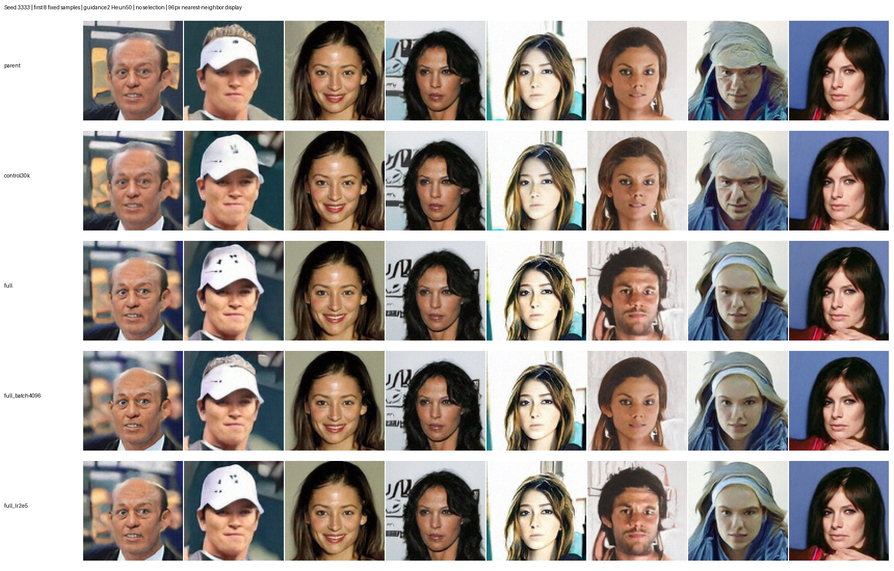
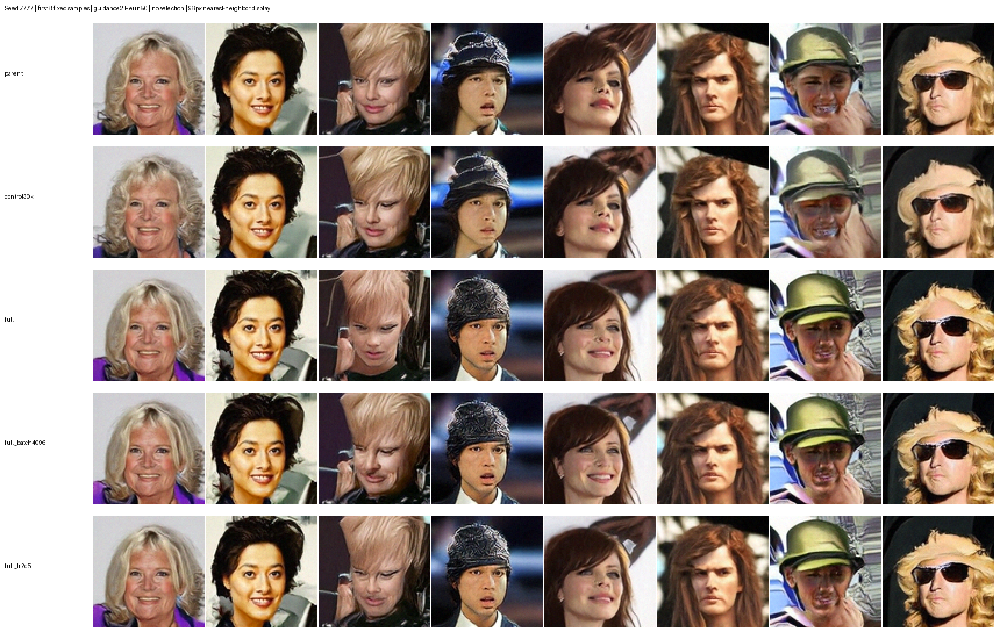

从当前最佳之一的 stratified EMA（累计计数 32.768M）初始化四组，保留全部学习参数。该权重在相同 guidance=2、两个固定 seed 下平均 FID 53.646，与先前 cleaner 的 53.648 基本持平。最新 batch/LR/EMA 轮没有超过它。四组统一重置 AdamW、EMA 年龄及本轮曝光计数；不是从随机权重训练。
| 实验 | 训练图数 | Batch | 学习率 | 任务 | 状态 | 新增曝光 | images/s |
|---|---|---|---|---|---|---|---|
| control30k | 30,000 | 1024 | 5e-05 | 59228 | SUCCEEDED | 16,384,000 | 13249 |
| full | 162,770 | 1024 | 5e-05 | 59229 | SUCCEEDED | 16,384,000 | 13248 |
| full_batch4096 | 162,770 | 4096 | 5e-05 | 59230 | SUCCEEDED | 16,384,000 | 13328 |
| full_lr2e5 | 162,770 | 1024 | 2e-05 | 59231 | SUCCEEDED | 16,384,000 | 13101 |
每组申请单节点 16 GPU，均使用已验证的 compile_full。每组追加 16,384,000 次图片曝光，3 万张对照约等效 546.13 遍，全量训练集约 100.66 遍。control30k 与 full 配置文件完全相同，仅数据路径不同；其余两组各只改变一个超参数。状态为最近一次检查快照。
从官方 train 分区扩到全部 162,770 张，新增 132,770 张。原来的 30,000 张图片和 1,000 张验证图保持 ID、顺序与像素完全不变。新缓存以前 1,000 张验证图和原 30,000 张训练图为原样前缀，追加其余官方训练图片；没有纳入官方验证或测试图片。预处理仍为原图 178×218、裁剪 (0,20,178,198)、Lanczos 缩放至 96×96。
全量数组 SHA256：bef6c0b5e85bfe6eebfdf332cc2a6d7a222c8351a2c7da76471f6de335bb8034
验证像素 SHA256：dd3ffc6deec5cd3f42c1b13c5cecb97d82f7e702436bf32ee321eee54dec8b99
共同初始权重 SHA256：6cbc51163016f5dd76bd9fe16d8f0f3e45e4ea1c2b7f3e2fb24713a90da933af
保存 4.096M、8.192M、16.384M 曝光处的 checkpoint；训练结束后自动依次评估这些 checkpoint，均用 seed 3333/7777、Heun50、guidance=2，并补充最终模型的无引导结果。FID/KID 仍使用原缓存中的同一批 1,000 张验证图，每次生成 1,024 张；不使用 best-of-N 或外部评分 API。
数据扩展夹具测试已通过：完整训练分区覆盖、验证集和旧训练像素保留、排除验证/测试泄漏、数组哈希匹配、拒绝覆写。既有权重继承与 96px 训练采样测试两项通过，主对照配置完全一致，两个变体均只改一个超参数，所有评估曝光点均整除 batch。
| 实验 | 4.096M 平均 FID | 8.192M 平均 FID | 16.384M 平均 FID | 最终无引导 FID |
|---|---|---|---|---|
| control30k | 54.1581 | 54.0987 | 53.4647 | 69.2377 |
| full | 54.2927 | 53.6508 | 52.6662 | 65.9567 |
| full_batch4096 | 55.4231 | 54.4882 | 54.6238 | 69.8863 |
| full_lr2e5 | 54.7590 | 54.3063 | 54.0695 | 68.7822 |
标准全量组最佳：最终 guidance=2 的两个 seed 分别为 52.4293 / 52.9032，对照为 53.6350 / 53.2943；平均降低约 0.80。无引导 FID 从 69.2377 降到 65.9567。全量组随曝光量持续改善，大 batch 和低学习率未超过它。每组训练约 23.5 分钟（包含首次编译），最后记录均无跳过更新。
固定样本显示改善是局部的，并非每张都更好；仍有眼睛、嘴部等失真。两次采样 seed 不是两次独立训练；小样本 FID/KID 结果用于实验筛选，尚不能作统计显著性结论。
每行固定前 8 张，无筛选、无增强；行顺序为初始模型、3 万张对照、全量标准、大 batch、低学习率。


继续全量标准和 3 万张对照，各继承自身的完整训练状态，再追加相同的 16.384M 曝光。另两组从全量标准的完整状态出发，分别将学习率改为 1e-4、或将 time logit mean 从 0 调为 -0.2。各只改变一个参数，沿用相同验证集与固定评估规则。新轮不重新初始化优化器。